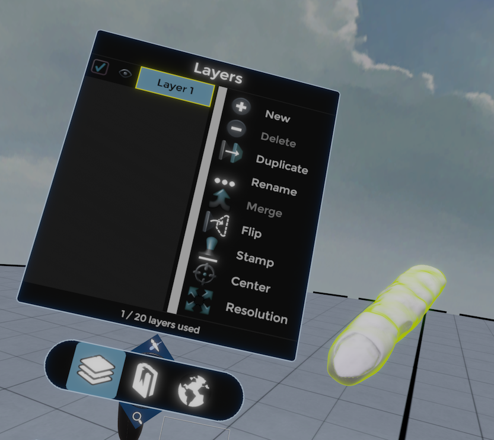
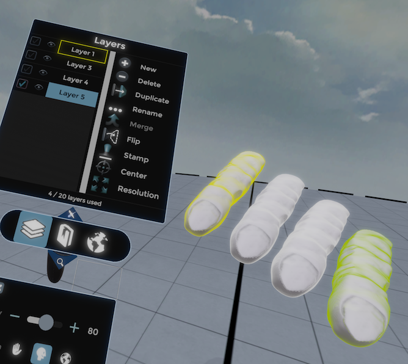
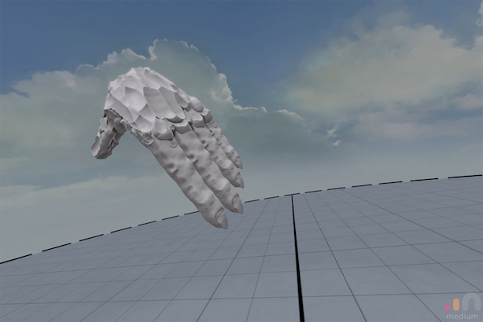
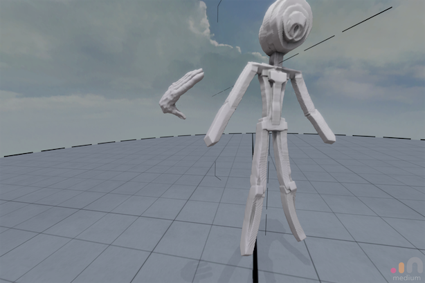
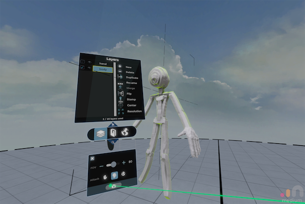
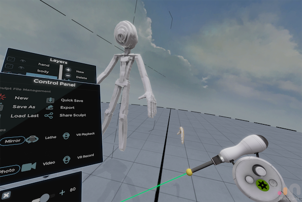
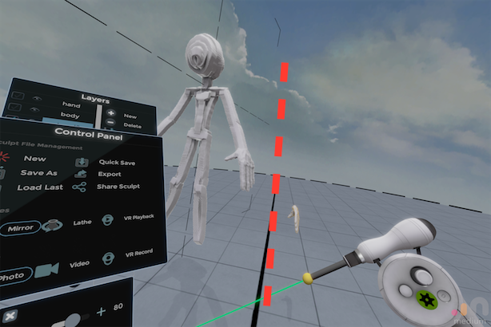
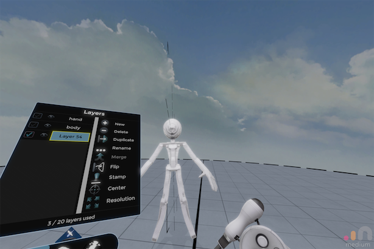
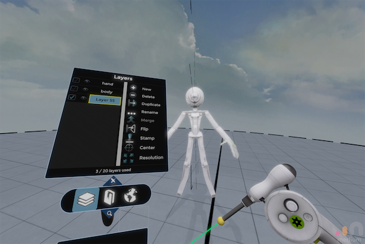
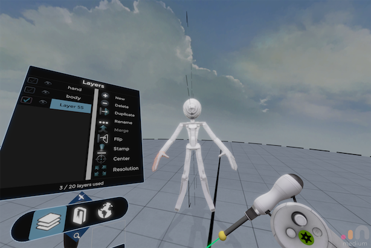

Oculus Mediumで、レイヤーの回転をデフォルト状態に合わせて、左右反転がズレなくする
概要
ちょっと悩んでたMediumのレイヤー移動問題に解を見つけた。
簡潔にいうと、
・Flipで左右反転してるはずなんだけど意図しないところに反転するのを解消する
という感じ
編集中にレイヤーに回転を加えた状態でFlipを行うと、意図しないところに出る
これがまあわかりにくい事象で、
1.まあ適当に指を作る。

2.並べて適当にリサイズ

3.手のひらを作る

とかやったあとに胴体+肩を作って、さっき作った手を持ってきて、、

手の位置を合わせてくっつけて、さて

handのレイヤーを選択、DuplicateしてFlip! 右手の位置に手が、、とおもいきや、そうはいかず。

これ、handのレイヤーを回転させているから発生する現象で、
「handのレイヤー内ではX軸を中心にFlipがちゃんと発生している。
handのレイヤーは回転が加わっているため、点線の位置あたりにFlipの軸が存在するのだ。

で、このままだと左右対称の位置、右手の位置にhandを左右対称コピーして出すことができない。
自由な移動でなんとかすることも可能だけど、まあズレる。手でやったらズレるよなあまあ。
というわけで、handのレイヤーの回転をデフォルトの軸で上書きして、
duplicate -> Flipで右手が出るようにする。
まずは新規レイヤーを作成(Layer 54がhandのレイヤー)

次にhandのレイヤーをduplicateし(Layer55)、54-55をMergeする。

この状態でFlipをかけると、新規レイヤー = デフォルトの無回転の状態でFlipが発生するため、
めっちゃいい感じに右手が完成する。

もっとなんか変わった事象が起こる時があって、そのへんは追い中。